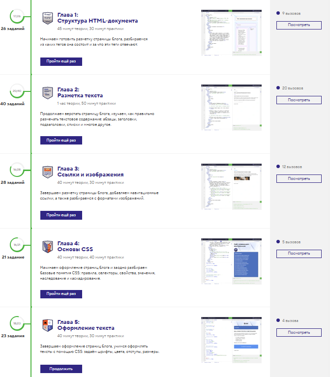
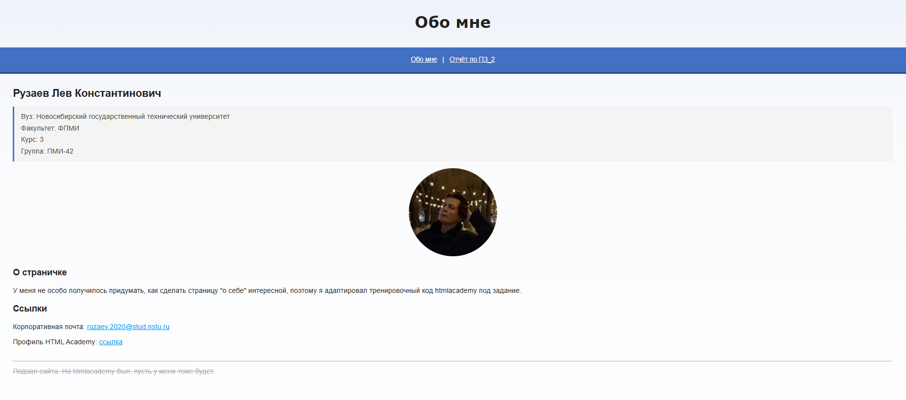

1. Цель работы
Освоить основы веб-программирования, HTML, CSS.
2. Постановка задачи
- выполнить задания на сайте htmlacademy.ru;
- сформировать страницу о себе с текстом, ссылками и фото;
- сформировать страницу с отчётом по лабораторной работе в виде HTML документа с сохранением всех атрибутов отчёта.
3. Ход работы
Задания на htmlacademy.ru
Были выполнены практические задания по курсу «Старт в программировании», достаточные для выполнения практического задания, а именно:
- Знакомство с фронтендом;
- Знакомство с HTML и CSS;


Страница «Обо мне»
Сформирована страница «Обо мне» с текстом, ссылками и фото. Для оформления стилей используется внешний файл style.css, который также применяется к странице отчёта.

Отчёт по лабораторной работе в виде html документа с сохранением всех атрибутов отчета
Сформирована страница отчёта. В файл style.css записаны праила для отчёта, в том числе и для печати.
4. Вывод
В результате работы получены навыки создания HTML-документов с семантической разметкой, подключения CSS и оформления контента. Обе страницы используют общий файл стилей, что демонстрирует переиспользование CSS.